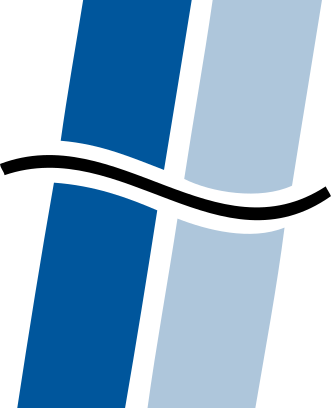

Deze presentatie is opgebouwd in HTML5
Druk op de → toets om verder te gaan.
|  |
Interne promotor: Leen BROUNS
Externe promotor: Philippe MOLLET
Multimediaframework voor museumkiosken
Veel vrijheid!
Geen content op kiosken → identieke soft- en hardware
Powerpoint, ...
HTML5 en JavaScript
Gesplitst mechanisme: server configureert de kiosken
Server: verwerkt XML bestanden in de Subversion repository
Kiosk: maakt gebruik van UPnP
Uniforme codebase: lokale interfaces in HTML
Identificatie als USB toetsenbord
Emdebian: Debian voor embedded devices
Doel bereikt: verbetering van huidige situatie
Impact